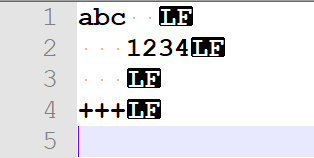

第1天：词法分析之扫描器
第1天：词法分析之扫描器
引言
任何讲编译原理的教材，无一例外都会先介绍编译的整个过程。比如按照下面的流程逐一介绍每个步骤都是干什么的。
源代码 → 词法分析 → 语法分析 → 语义分析 → 中间代码 → 优化 → 目标代码 → 可执行文件
但是，我不打算这样写。原因有二：
第一，凡是读这本书的朋友，多多少少都对这个过程有所了解，就算不了解，借助 AI 搜索也能立刻知晓；
第二，即使我花费笔墨介绍每个步骤，读者也不一定能理解，甚至越看越迷糊，从入门到放弃。
所以，我们开门见山，从词法分析开始，各个击破。走好眼下的路，以后的路以后再说。
什么是词法分析
以下面的 c 代码为例：
1 | |
当我们阅读这行代码的时候，首先进入我们脑海的是“int”，这是一个整体，而不是 i, n, t 这三个字母。
再然后，我们看到了 “sum=0”, 虽然这些字符之间没有空格，但是我们知道，“sum”是变量的名字;“=”是赋值运算符;“0”是右操作数。
诸如此类，一个懂 C 语言的人，知道哪些字符是一个整体，不能分开来看。也知道哪些字符虽然挨着排列，但是可以继续拆分。
所谓词法分析（Lexical Analysis），就是把源代码的字符序列转换为一个个词法记号（Token）。
这里的“int”、“sum”、“=”、“0”，包括末尾的“;”，都属于词法记号。
扫描函数
为了完成词法分析，我们先要写一个扫描函数。扫描函数的作用是从源代码文件中获取一个个字符。
1 | |
这是一个扫描器，每调用一次 scan()，就可以从文件中读取一个字符到全局变量 ch_g（我们约定，全局变量以 _g 结尾）。
第 4 行的 file 是文件指针，当文件 open 成功后，它就不是 NULL 了。
第 16 行定义了一个字符数组 static char line_buf[MAX_LEN]，数组大小由 MAX_LEN 决定，例如 80.
第 22 行 line_len = fread(line_buf, 1, MAX_LEN, file);
作用是读取 MAX_LEN 个字节到 line_buf[] 数组。如果有文件足够长，那么返回值 line_len 就等于 MAX_LEN； line_len 这个变量表示数组中有多少可供使用的字符。
当 line_buf[] 数组不为空的时候，每调用一次 scan()，就从数组中取一个字符给 ch_g；也就是第 29 行：ch_g = line_buf[read_pos++];
read_pos 最开始是 0 ，每取一个字符就往后移动一个位置，所以是 read_pos++；同时，可供使用的字符就少了一个，所以有第 30 行的 line_len--;
调用 scan() 函数 MAX_LEN 次后，数组就空了，line_len 的值是 0，这时候再调用 line_len = fread(line_buf, 1, MAX_LEN, file);
当快到文件末尾的时候，假设还剩 35 个字符，那么 fread(…) 的返回值就是 35；
再调用 scan() 函数 35 次后，数组就空了。
此时调用 fread(…)， 因为到了文件末尾， fread 的返回值就是 0；数组为空,此时执行 24 ~ 25 行。我们给数组里面写入一个结束标记。
32 ~ 37 是为了给后面的需求铺垫。如果词法错误或者语法错误，编译器要报告是哪一行哪一列出了错误，所以我们要记录当前获取的字符在源文件中的位置。
行号和列号分别用变量 line_num_g， col_num_g 表示。
实践环节：测试扫描函数
写完后，我们可以测试一下 scan() 这个函数，看看和预期的是否一样。
测试思路是这样的：我们找一个简单的文本文件，用扫描器得到这个文件的字符序列，输出每个字符及它的行号，列号。
测试代码如下：
1 | |
第 16 行，根据命令行参数，打开源文件；
18~21，反复调用 scan()，如果没有到文件的末尾，就打印这个字符和它的行号、列号。
第 19 行的 show_ch 是一个辅助函数。代码如下：
1 | |
我们准备的源代码文件如下：

小圆点表示空格，LF 表示换行。
测试结果（仅截取部分）：
1 | |
我们发现字母 a、b、c 的坐标没有问题，但是第 11 行，换行符的坐标是(2, 1)，这就不对了。对照源文件，它的坐标应该是（1，6）.
如何修复这个小 bug 呢？
下面是进阶内容，供学有余力的同学阅读。跳过这部分不会影响后面的学习。
进阶内容：修复坐标错误
为什么换行的坐标不对呢？
1 | |
这是因为在遇到‘\n’ 的时候，我们让 line_num_g 增加了1，所以就把本来在行尾的换行，当成下一行的第一个字符了。
如何解决这个麻烦呢？请读者停下来思考一下。
办法一定有很多，我说说我的办法。遇到‘\n’ 的时候，不应该更新行号，扫描到它后面的那个字符，才应该更新行号。换句话说，如果一个字符的上一个字符是‘\n’ ，我们就给这个字符更新行号。
所以，我们要增加一个变量 last_ch_g，用来记录上一个字符。
1 | |
运行结果就不贴图了，请学有余力的读者动手验证。